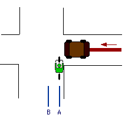
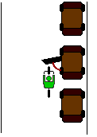
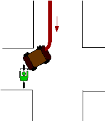
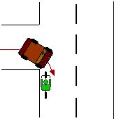
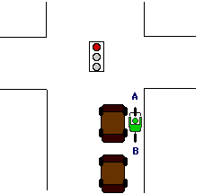
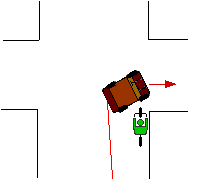
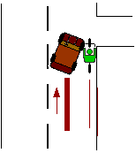
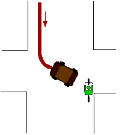
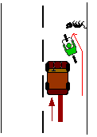
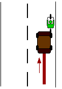

Devin Joslin, a lead traffic engineer here in Boulder, has discussed many of these collision types as they apply in Boulder, such as situations where multi-use paths or bike lanes interact with traffic differently than is common in other cities, especially across the Denver Metro Area.

Collision Type #1: The Right Cross
A driver pulling out from the right either strikes you as you pass in front of them or they nose out and you hit the vehicle. Devin Joslin notes Boulder sees this frequently along multi-use paths intersecting driveways because motorists do not expect riders coming from both directions.
How to avoid this collision
Get a headlight. Bright daytime flash plus a nighttime beam (helmet-mounted if possible) makes you visible where drivers are scanning for cars, not bikes.
Wave or use a horn. If you cannot make eye contact, move your arm or call out “hey!” so the driver registers movement.
Slow to a roll. If sight lines are bad, scrub enough speed that you can stop completely.
Ride farther left. Position closer to the center of the lane so you are inside the driver’s cone of vision and have room to dodge left if they creep out.
Stats show these intersection conflicts are more likely than rear-end impacts, so shifting left generally reduces risk even if it feels counterintuitive.

Collision Type #2: The Door Prize
Drivers or passengers open a door into your line and you cannot stop in time. Toronto lists it as the #2 crash type; Santa Barbara logs it at #1.
How to avoid this collision
Ride to the left. Stay a full door-width away from parked cars even if that places you in the travel lane. It is safer to be clearly visible to behind traffic than to thread a narrow door zone.

Collision Type #3: The Crosswalk Slam
Sidewalk riders enter a crosswalk just as a motorist turns right, often with no time for either party to react. Devin Joslin ranks this among Boulder’s most common collisions.
How to avoid this collision
Add a headlight. Even in dusk light you need to be the brightest thing in the driver’s peripheral vision.
Scrub speed. Approach curb cuts slow enough to yield or stop.
Stay off the sidewalk. Crossing between sidewalks exposes you to blind driveways and right-turning traffic; use the roadway unless the path is truly separated and free of crossings.

Collision Type #4: The Wrong-Way Wreck
Wrong-way riders enter intersections from the direction motorists are not scanning, so the driver turns right directly into them. Approaching cars also reach you faster, leaving little reaction time.
How to avoid this collision
Ride with traffic, always. Wrong-way cycling is illegal, makes right turns impossible, and multiplies the speed of any impact.
Only 8% of riders travel the wrong way, yet nearly 25% of crashes involve them—evidence that compliance matters.

Collision Type #5: The Red Light of Death
You stop to the right of a vehicle at a signal. When the light turns green the driver turns right over you, or a bus/semi swings wide and crushes you.
How to avoid this collision
Stop behind the car, not beside it. Sitting directly in the driver’s field of view eliminates the blind spot.
Use point A or B. Either pull ahead where the first driver clearly sees you and clear the intersection immediately, or stay behind the first car with enough buffer from the second.
Never pass a vehicle on the right through the intersection. Passenger doors and surprise right turns are waiting.

Collision Type #6: The Right Hook
A motorist underestimates your speed, passes, then immediately turns right into you or across your path. Devin Joslin lists this as another top Boulder crash type.
How to avoid this collision
Stay off the sidewalk. Drivers cannot anticipate a rapid merge from the curb.
Take the lane. Controlling the lane discourages risky passes and keeps you visible.
Use a mirror. Check behind you before intersections so you know if a vehicle is shadowing your wheel.

Collision Type #7: The Right Hook, Part II
Passing on the right—whether it is a car, truck, or another bike—sets you up for a surprise right turn into a driveway or parking lot.
How to avoid this collision
Do not pass on the right. Slow down behind the vehicle and wait to pass on the left when safe.
Announce passes. If conditions force a right-side overtake, call “on your right” so the rider or driver knows you are there.
Check mirrors before you turn right. Drivers should also scan for cyclists attempting an inside pass.

Collision Type #8: The Left Cross
An oncoming vehicle turns left directly into you—often because you were riding on the sidewalk or hidden behind larger traffic.
How to avoid this collision
Stay off the sidewalk. Popping out of a sidewalk ramp makes you invisible.
Run high-visibility gear. Daytime running lights and bright or reflective clothing give drivers a fighting chance to see you.
Do not pass on the right. Remaining in line with traffic keeps you in the sightline of left-turning cars.
Slow when unsure. If you cannot make eye contact, ease up until you can stop.

Collision Type #9: The Rear End
Swerving around a parked car without checking behind can place you directly in front of fast traffic.
How to avoid this collision
Look before you move. Practice glancing back while holding a straight line.
Stop weaving. Ride a predictable path instead of darting between open parking gaps.
Use mirrors and signals. A quick glance and an extended arm dramatically cut surprises.

Collision Type #10: The Rear End, Part II
This accounts for only 3.8% of crashes but is severe when it happens, especially at night or on high-speed roads.
How to avoid this collision
Mount a bright rear light. Flashing LEDs with fresh batteries are cheap insurance.
Wear reflective gear. Vests, triangles, and leg bands pop day or night.
Choose wide, slow streets. Neighborhood routes and weekend back streets keep speeds down.
Keep a mirror. Scan for inattentive drivers and bail to the shoulder if necessary.
Do not hug the curb. Leave a safety buffer so you can move right if someone buzzes too close, and to stay visible at intersections.
Credit for materials goes to bicyclesafe.com, a website that has been advocating for safer riding skills and conditions since before 2013. Much of this content has been super relevant to infrastructure projects around the world, especially here in Boulder. While clear and especially clever in its content, this website does not fit in with the modern age. We hope that repackaging this valuable information will better portray the safe riding habits that lead to fewer collisions.